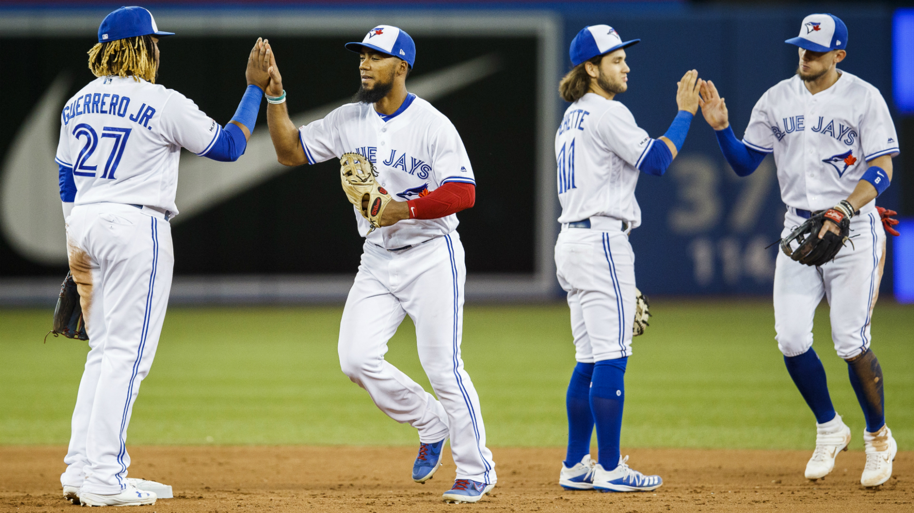
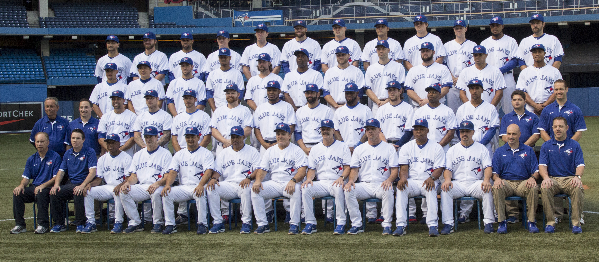

The Website for Everthing Blue Jays
Come Here to Get Your Latest News
- About the Team
- Players
- Scores and schedules
Club Summary
The Torotno Blue Jays are Toronto's baseball team. They were introduced in 1977 and play in the Rogers Centre in downtown Toronto.
The Blue Jays won world series titles in 1992 and 1993 lead by Joe Carter. The Blue Jays are Canada's only baseball team and a massive
part of baseball culture in Toronto and Canada.

News
- When will the Blue Jays make the playoffs again?
- Will Vladimar Guerrero Jr live up to the hype?
- What offseason moves will the Blue Jays make?
- What Blue Jays prospects should we be on the lookout for
- When can we expect the Blue Jays to win the World Series
Toronto -Blue Jays News
Scores and schedules
The Blue Jays finished the season with a record of 67-95. The Blue Jays failed to qualify for the playoffs for a 3rd straight year.
Full -scores and schedule of the Blue Jays season
History
The Toronto Blue Jays were founded in 1977 and went back to back with championships in 1992 and 1993. Baseball is also a
massive sport in Toronto. The Toronto Blue Jays play at the Rogers Centre in downtown Toronto. While not
as popular as Basketball and Hockey due to the lack of success in recent years by the Blue Jays, baseball is still a popular sport in Toronto and Canada
Roster
Pitchers
Jason Adam,
Buddy Boshers,
Clay Buchholz,
Yennsy Díaz,
Ryan Dull,
Wilmer Font,
Sam Gaviglio,
Ken Giles,
Anthony Kay,
Derek Law,
Elvis Luciano,
Julian Merryweather,
Patrick Murphy,
Thomas Pannone,
Héctor Pérez,
Sean Reid-Foley,
Jordan Romano,
Justin Shafer,
Brock Stewart,
Ryan Tepera,
Trent Thornton,
Jacob Waguespack,
T. J. Zeuch,
Catchers
Danny Jansen,
Luke Maile,
Reese McGuire,
Infielders
Bo Bichette,
Cavan Biggio,
Brandon Drury,
Vladimir Guerrero Jr.,
Justin Smoak,
Rowdy Tellez,
Richard Ureña,
Breyvic Valera,
Outfielders
Anthony Alford,
Jonathan Davis,
Derek Fisher,
Randal Grichuk,
Teoscar Hernández,
Billy McKinney,
Coach
Charlie Montoyo

Club summary